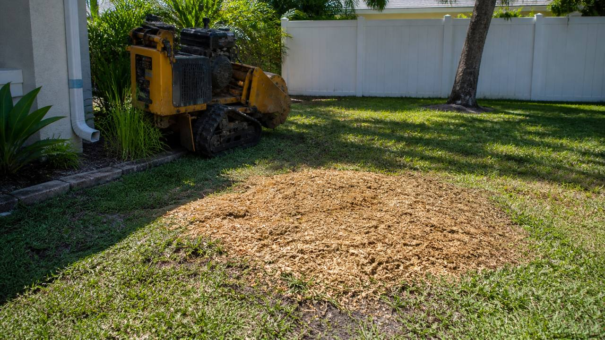

Residential stump grinding for Melbourne and nearby Brevard County
Clear the stump without tearing up the whole yard
Old stumps are more than an eyesore. They make mowing harder, attract pests, create trip hazards, and get in the way of sod, landscaping, fences, patios, driveways, and storm cleanup. Melbourne FL Stump Grinding helps homeowners request practical local quotes for grinding tree stumps below grade so the area can be leveled, covered with chips, replanted, or prepared for the next project.
Single stump grinding
Good for one leftover oak, palm, pine, or ornamental stump after tree removal. Send the diameter, height, access notes, and photos for a cleaner estimate.
Multiple stump cleanup
Useful after clearing a lot, removing storm-damaged trees, or cleaning up an older property. Bundling several stumps is often more efficient than separate trips.
Backyard and side-yard access
Many residential stumps can be reached with compact grinding equipment, but gate width, slope, irrigation, fences, and landscaping all affect the quote.
Post-storm stump work
After tropical weather or heavy winds, grinding the remaining stump helps finish the cleanup once the tree and larger debris are gone.
Root flare and surface roots
Surface roots near the stump can usually be discussed in the quote. Include photos of exposed roots, nearby concrete, utilities, or sprinkler heads.
Clean-up options
Some homeowners keep chips to fill the hole or use as mulch. Others prefer the area raked, leveled, or hauled cleaner. Ask for the option you want upfront.

How the quote process works
What happens after you request a quote
- Send the basics. Include your city, phone number, number of stumps, approximate size, and any access issues.
- Reply with photos. A photo from a few steps back plus one close-up of the stump helps estimate size, roots, and machine access.
- Confirm scope. The quote should clarify whether chips stay on site, whether surface roots are included, and how deep the stump will be ground.
- Schedule the work. Most simple residential jobs can be handled without a long sales process once access and price are clear.
Best photos to send

- One wide photo showing the stump and yard access.
- One close photo showing the stump diameter.
- Gate opening or side-yard path if access is tight.
- Nearby concrete, fence, pool screen, irrigation, or landscaping.
Local conditions matter
Stump grinding in Melbourne, FL yards
Brevard County yards can have sandy soil, shallow roots, irrigation lines, pool screens, tight side gates, and older stumps left behind after hurricane-season tree work. A good quote should account for the actual property, not just a generic stump price. That is why the form asks for city, access notes, stump count, and photos.
Melbourne and West Melbourne
Common requests include front-yard stumps, backyard stumps behind fences, and cleanup after oak, palm, pine, or ornamental tree removal.
Palm Bay and south Brevard
Larger residential lots and multiple-stump jobs are common. Access, distance, and number of stumps can affect scheduling and price.
Viera, Rockledge, Cocoa, and beachside
Quotes may need to consider tighter landscaping, HOA appearance standards, pool enclosures, driveways, walkways, and nearby hardscape.
Pricing factors
What affects stump grinding cost?
There is no honest one-price-fits-all number without seeing the stump. The biggest pricing factors are usually stump diameter, how high it sits above ground, wood hardness, visible roots, number of stumps, machine access, cleanup expectations, and travel distance.

Usually simpler
- One accessible front-yard stump.
- Clear path from driveway to stump.
- No nearby concrete, fence, utilities, or irrigation concerns.
- Wood chips can stay on site to fill the hole.
Usually more involved
- Large-diameter stumps or multiple stumps.
- Backyard access through narrow gates or soft ground.
- Roots near sidewalks, patios, pool screens, or sprinkler systems.
- Haul-away, raking, leveling, or extra cleanup requested.
Read the Brevard County stump grinding cost guide for more detail.
Service areas
The primary focus is stump grinding in Melbourne, FL, with nearby Brevard County pages for homeowners searching by city or service area.
Before the crew arrives
A little preparation makes the quote and job smoother. If you are not sure about something, mention it in the form instead of guessing.
- Mark sprinkler heads, shallow irrigation, lighting wires, or invisible fence lines if you know where they are.
- Move loose furniture, toys, hoses, potted plants, and yard decor away from the work area.
- Measure the narrowest gate or side-yard opening if the stump is behind a fence.
- Tell us if the stump is close to a pool screen, patio, sidewalk, driveway, fence, or house.
- Decide whether you want chips left, spread, raked into the hole, or cleaned up more thoroughly.
- Send the approximate timeline if this is tied to sod, landscaping, fencing, construction, or a closing date.
Stump grinding FAQ
How much does stump grinding cost in Melbourne, FL?
Cost depends on stump diameter, height, root flare, number of stumps, access, cleanup, and travel. Photos and measurements make the quote more realistic than a generic price range.
How deep is a stump usually ground?
Many residential jobs grind the stump several inches below grade so the area can be covered with soil, chips, sod, or landscaping. If you need deeper grinding for replanting, construction, or a specific project, say that in the quote request.
Is stump grinding different from stump removal?
Yes. Grinding chips away the visible stump below ground level. Full removal means digging out the stump and major roots, which is more disruptive and often unnecessary for normal yard cleanup.
Will the roots be removed too?
Stump grinding focuses on the stump and nearby visible root flare. Long underground roots are generally left to decay naturally unless a different scope is discussed before the job.
Can a stump grinder fit through a backyard gate?
Often, but not always. Gate width, turns, slope, steps, wet ground, landscaping, and pool-screen access all matter. Measure the narrowest access point if you can.
What happens to the wood chips?
Wood chips are commonly left on site and can be used to fill the hole or as mulch. If you want extra cleanup or haul-away, ask for that in the quote so it is included properly.
Do you serve Palm Bay and other Brevard County areas?
Yes. Quote requests are accepted for Melbourne, West Melbourne, Palm Bay, Viera, Rockledge, Cocoa, Merritt Island, Titusville, beachside communities, and nearby Brevard County areas.
Need a stump ground down?
Call or send the quote form with the stump size, city, access notes, and photos. The more detail you include, the easier it is to get a useful estimate.